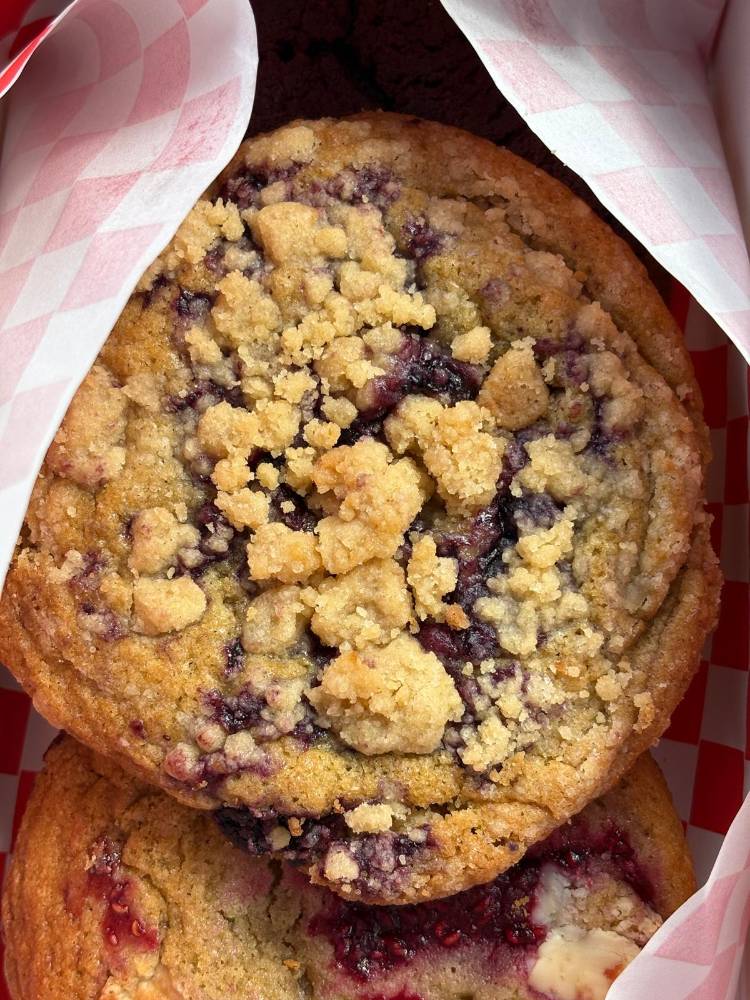

Blueberry Muffin Cookies

Blueberry muffin cookies with crumble topping
These soft chewy cookies have a hint of lemon and are packed full of blueberry jam.
This recipe will make around 45 cookies so feel free to divide as required for a smaller batch.
Ingredients
- Plain flour - 1500g
- Baking soda - 5 teaspoons
- Melted butter - 900g
- Salt - 2 teaspoons
- Light brown soft sugar - 1150g
- Granulated sugar - 250g
- Large eggs - 6
- Zest of lemon - 1
- Bluberry jam - 400g
Steps
- Melt the butter in a pan or microwave and leave to cool for a bit.
- Combine the flour, baking soda, salt and lemon zest in a bowl and set aside.
- Once the butter has cooled, add it to a separate bowl with the sugars and combine.
- To this bowl add the eggs and mix well.
- Add the bowl of dry ingredients into the wet mixture and mix until a sticky dough is formed.
- For best results now let the dough chill in the fridge for a few hours.
- Roll the dough out into even balls. We recommend 80g each.
- In each ball form an opening with your thumb or the back of a teaspoon.
- Add a teaspoon of the blueberry jam into each of these. Make sure the cookie is jam side up
when you add it to a baking tray.
- Add the dough balls to parchemtn lined baking trays, leaving enough space for them to spread out as they bake.
- Put the trays into a pre-heated oven at 180c and bake for 13 minutes.
- Remove and allow to cool.
Back to home